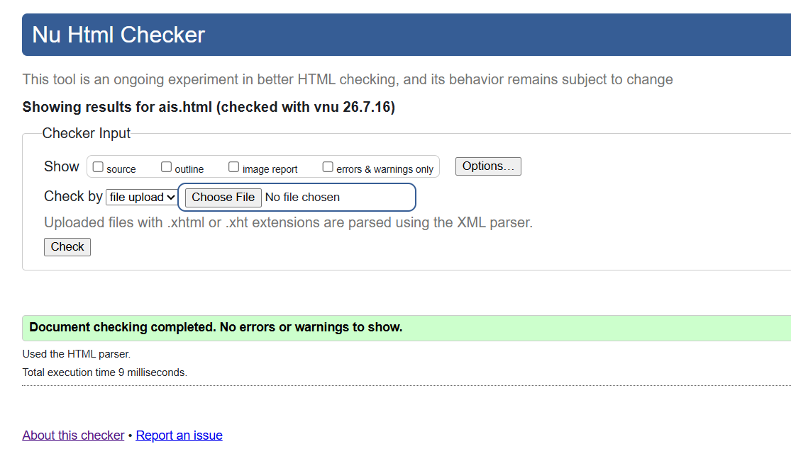
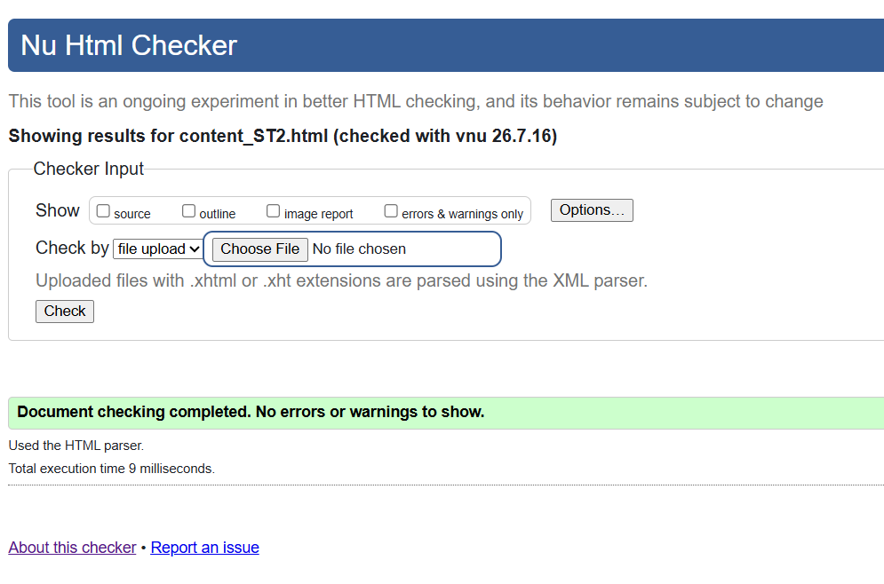

PULSE
Good Health & Well-Being
Good Health & Well-Being
The HTML code for the Splash Screen sets up the animated introductory page, including the PULSE logo, team details, SDG 3 tagline, and a 4-second auto-redirect. It links to global.css and uses semantic HTML5 tags such as header, nav, main, section, and footer. The document validation reports no errors or warnings.

The HTML code for the Action Impact Simulator page provides an interactive wellness tool with action cards, impact scores, and dynamic background images. It uses semantic HTML5 elements and links to global.css. The page has been validated and contains no errors or warnings.

The HTML code for the Content page features structured article sections with semantic elements, including an in-page navigation menu, information cards, and a "Go to Top" control. The page has been validated and contains no errors or warnings.
